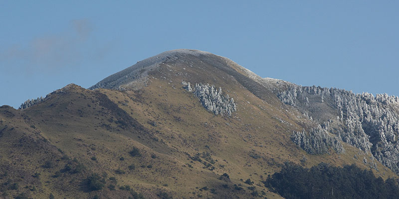
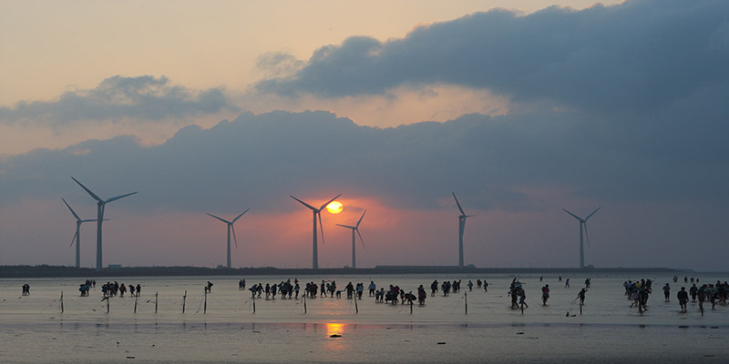
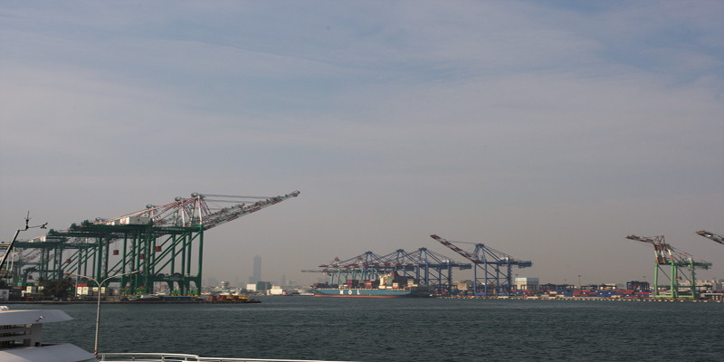
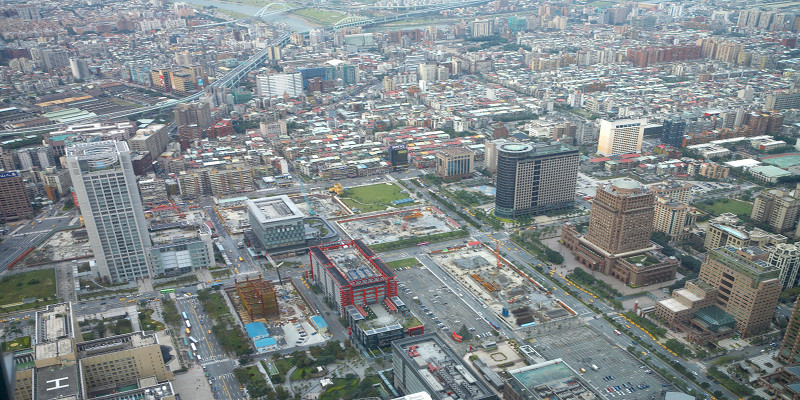
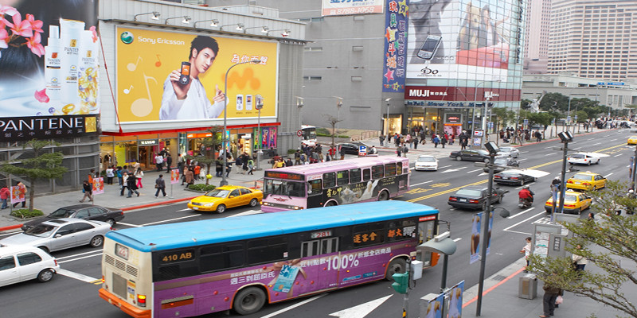
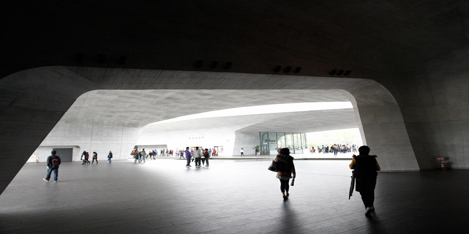
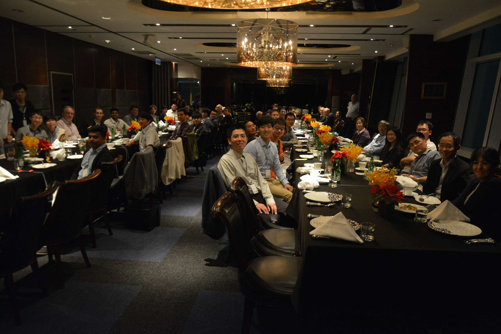

|  |  | ||
|  |  |  |  |
Thank you for attending PRDC 2018 in Taipei, Taiwan!
We wish you enjoy this year's PRDC event. We really appreciate your participation and contribution. We hope to meet you all again at PRDC 2019 in Kyoto, Japan. For conference photos, please click the link (use the same ID and password as for the proceedings download)
Welcome
IEEE PRDC 2018 is the twenty-third event in the series of symposia started in 1989 that are devoted to dependable and fault-tolerant computing. PRDC is recognized as the main event in the Pacific area that covers many dimensions of dependability and fault tolerance, encompassing fundamental theoretical approaches, practical experimental projects, and commercial components and systems. As applications of computing systems have permeated into all aspects of daily life, the dependability of computing system has become increasingly critical. This symposium provides a forum for countries around the Pacific Rim and other areas of the world to exchange ideas for improving the dependability of computing systems.
Taipei is the capital city and a special municipality of Taiwan. Located at the northern tip of the island, Taipei is surrounded by the municipality of New Taipei City. Taipei boasts bountiful ecological scenery for the fact that Taipei Basin was originally a lake. Guandu Nature Park and Yangmingshan National Park are excellent outing destinations for city dwellers to enjoy the unique natural beauty of Taipei. Taipei is home to countless tourist attractions and museumsms.The National Palace Museum houses roughly 700,000 ancient artifacts and internationally renowned artwork. The night markets allures crowds of local and oversea visitors to experience the pulse of after-hours life in Taiwan. Taipei has a robust public transporation system. The MRT system and bus lines cover almost every corner of the ciy. The high-speed rail system also allows convenient day trips to other major cities in Taiwan.
We look forward to seeing you at PRDC 2018 in Taipei, Taiwan!
Previous PRDC Events
Sponsorship

Contact Us
For inquiries, please email to conference organizers prdc2018@gmail.com.